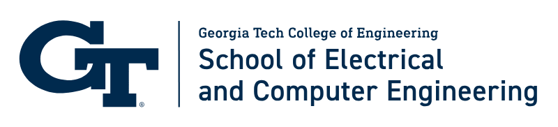
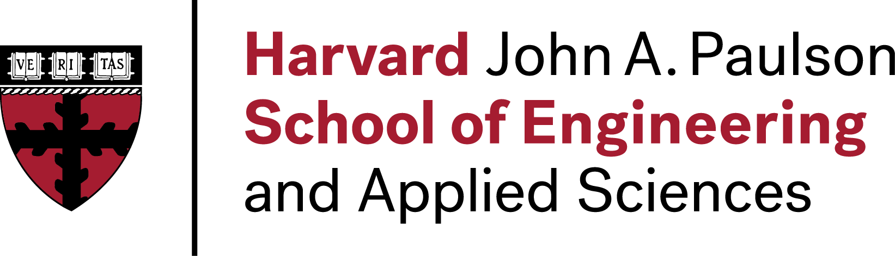

covert communication · llm agents
Inference-time covert communication over LLM-agent conversations.
Feedback coding embeds hidden payloads in agentic dialogue at ≈0.2 bits/token and <0.3% message error — distortion-free, provably secure, and requiring no shared model or prompt.
Running example: two agents play a full game of chess through the covert channel beneath an ordinary chat.



The Information Theory
Laboratory @ Harvard